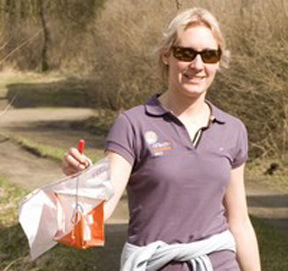
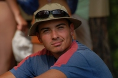
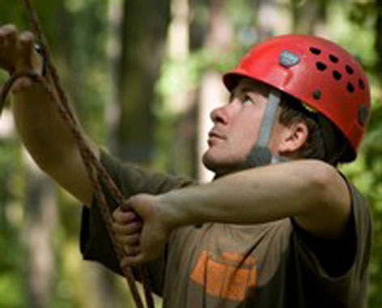
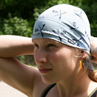
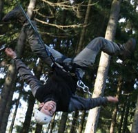

Leňa
30 let, inženýrka kvality na vstřikovně plastů - Mezi její záliby patří sport všeho druhu a cestování.
- Jejím životním snem je půlroční cestování po Jižní Americe a dokonce se kvůli tomu začala učit i španělsky.
- Ráda by v budoucnu vyhrála či organizovala nějaký outdoorový závod.
|
 |
|
Jirka
26 let, student, konzultant - Duší Pražák, citem minimalista a jeho posláním je dokázat velké věci.
- Miluje beachvolejbal, jízdu na kole, lezení, orientační běh, squash, jablíčka a mnohem víc…
- Životním úspěchem je přežít mezi
Brňáky
|
 |
|
Sabča
student, sociální pedagog - Mezi její oblíbené činnosti patří některé sportovní aktivity, zejména voda, lezení, lyžování, ale také deskové a počítačové hry. Nesnáší běhání
- Úplně největší zálibou, na kterou ale nezbývá moc času, je spánek.
- Jejím asi nesplnitelným snem je vylézt nějakou osmitisícovku
|

|
|
Atrey
27 let - Pracuje jako ďas, aspoň to o sobě říká
- Jeho snem je být jednou ve vatě
|

|
|
Lucka
24 let, studentka architektury - Školu dost fláká, za což se děsně stydí
- Věnuje se radiovému orientačnímu běhu a dalším vytrvalostním sportům (kolo, plavání, OB)
- Nosí hodinky na pravé ruce, je Švédka a doučuje matematiku
|

|
|
Peťa
30 let, mapař - Dělá mapy pro orientační běh
- Rád běhá, horolezí a chodí do přírody
- Podporuje malé kvalitní pivovary
|

|